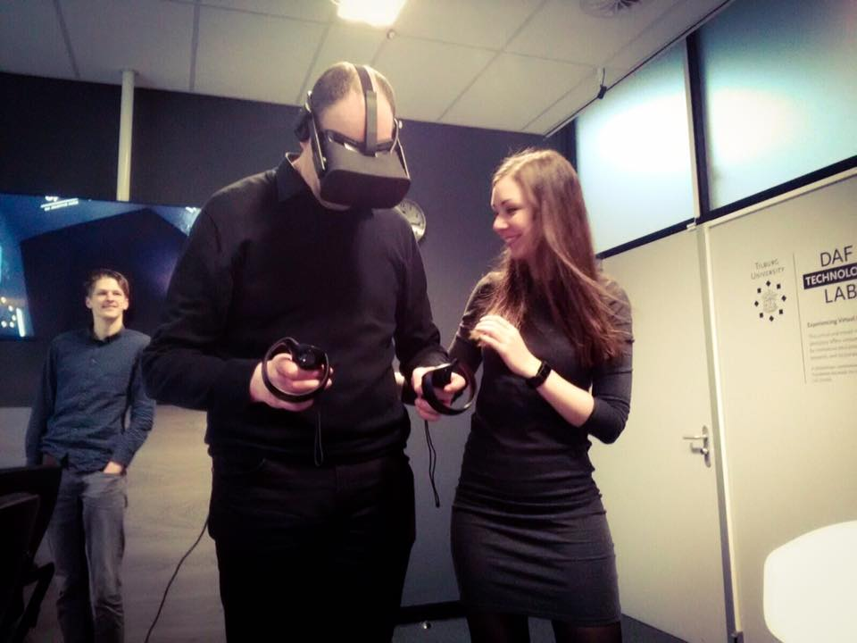

Is religion pre-programmed into our brains?
About me
PhD Candidate | Dreaming Traveler | Wannabe Pianist | Coffee Addict | Yoga and Mindfulness Enthusiast

My name is Angelique, or Angelica. My parents could not choose between the two so they decided to give me both names. It might be a bit confusing, but if you prefer one over the other feel free to call me by your preferred name from now on. I'm a PhD candidate studying behavioral, cognitive and neurophysiological processes during learning in virtual reality. I'm affiliated with the Cognitive and Artificial Intelligence Group at Tilburg University in the Netherlands. Besides being a nerdy researcher I love to travel. The last exotic places I've been were Sri Lanka, Scotland, California & Japan. I am dreaming about traveling to Cuba, New Zealand and other exciting and beautiful places around the world. I try to stay active by biking, running and doing yoga. Additionally, I like to write and drink coffee in cozy cafés. I am trying to learn to play the piano, but I'm still mostly playing annoying Christmas songs (all year round). When science, or my lack of piano skills, gets too frustrating I try to do some mindfulness exercises although I can't really seem to stop my crazy brain from going anywhere it wants to.